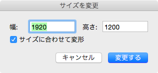

The View Menu
The view menu relative to operate of display, in addtion edit a document settings.
| Relative to Display | |
|---|---|
| Zoom In | Zoom in on image on the main window(current document). |
| Zoom Out | Zoom out on image on the main window(current document). |
| Reset | Show actual size on the main window(current document). (i.e. reset the zoom factor to 100%.) |
| Relative to Document Settings | |
| Document | Open the document setting panel, which edit a document settings. |
| Resize | Open the dialogue panel of resize, which set up image size. |
Document Settings
The document setting panel edit a document setting based on the PNG specification.(Please note that, for each parameter detail of document settings see to the PNG specification. And describe of each parameter contain PNG chunk name.)

- Resolution
Set up resolution horizontal and vertical, respectiely(pHYs) - Use Background color
Specify a back gound color(index number)(bKGD). - Color Space
Specify a color space.
When use the ICC Profile(iCCP), can not contain within Gamma(gAMA), Chromaticities(cHRM) and SRGB(sRGB).
Resize image
The dialogue panel of resize work that specify image size(aka resize).

Specify size of horizontal and vertical, resize image when click button.
When Transform is checked, each pixels are transformed according to a factor of magnify.
When Transform is NOT checked, image resize with left top origin point(of cource each pixels are not transformed).